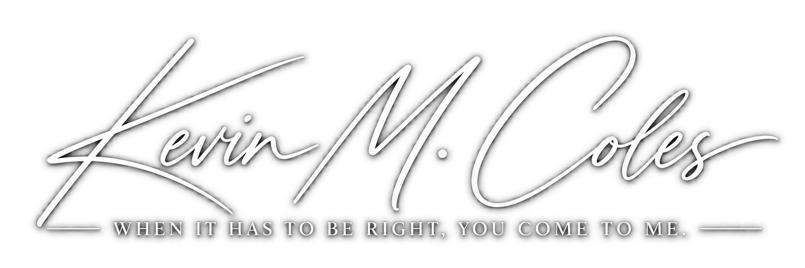

My career was built inside organizations where technology is not a support function sitting quietly in the background. It moves money, protects sensitive information, supports critical operations, connects thousands of employees, and has consequences when the wrong decision gets made.
Over 15 years, I progressed from working directly with enterprise technology to leading architecture, modernization, integration, and technical direction across financial services, defense, utilities, municipal government, and media. That progression matters to me. I understand the technology because I spent years close enough to build it, migrate it, break it, fix it, and eventually become responsible for deciding what came next.
I have worked inside Fortune 500 and security sensitive environments, led technology integration for a multimillion dollar defense acquisition, directed major platform transformations, and shaped architecture within enterprise environments supporting more than 100,000 endpoints. My work has crossed identity, cybersecurity, cloud, infrastructure, applications, endpoint strategy, compliance, operational technology, and the teams responsible for keeping all of it running.
The larger the environment became, the less the difficult questions were about individual technologies.
They became questions of investment. Risk. Timing. Architecture. Organizational responsibility. Whether to modernize or leave something alone. Whether a provider's recommendation actually made sense. Whether an initiative deserved more capital or needed to stop. How an acquisition should be integrated. What the organization would inherit three years after a decision made sense on paper today.
Those are executive technology decisions, and they require something different from technical expertise alone. They require enough technical depth to understand the consequences, enough business judgment to understand the tradeoffs, and enough independence to make the call even when the answer is inconvenient.
That is the work I do now.
I founded Coles Technical Group to operate at that level directly with leadership. As a fractional CIO/CTO, I take responsibility for technology direction across strategy, investment, architecture, risk, major initiatives, and provider accountability while the teams built to execute the work continue doing what they do best.
I am not interested in adding another layer of management to an organization. I am there to make sure the technology function has direction, consequential decisions have an owner, and leadership has someone at the table who understands both what the technology can do and what the decision will cost if it is wrong.
Most companies have now done the responsible thing with AI. They wrote a policy. Leadership signed it, HR circulated it, and everyone moved on.
Read Perspective ↗Most executives meet their technology budget once a year, in a spreadsheet organized by category. Those are fair questions. They are also not where the real decision lives.
Read Perspective ↗When a leadership team starts to feel its technology slipping, the first question is almost always the same. Do we need a CIO? My answer usually surprises people.
Read Perspective ↗My career has spanned financial services, defense, utilities, municipal government, and media, progressing from hands on technology into enterprise architecture, technical leadership, major modernization programs, M&A integration, and technology direction.
Across those environments, my work has touched technology estates representing more than 200,000 endpoints across multiple countries, from global Fortune 500 infrastructure to critical utilities and security sensitive defense environments.
The environments themselves have rarely been simple. Commercial cloud. Microsoft GCC and GCC High. Highly controlled enterprise environments. Complex identity and security requirements. Acquisitions requiring separate organizations and technology environments to become one. Legacy platforms that could not simply be switched off. Specialized technology ranging from conventional enterprise endpoints to field equipment, warehouse systems, drones, smart glasses, VR, and IoT class devices.
My responsibility has crossed enterprise architecture, infrastructure, cybersecurity, identity and access, cloud, endpoint strategy, application delivery, compliance, platform modernization, operational technology, and the standards and operating models surrounding them.
That breadth changed the nature of the work. The question stopped being whether I could design the technology. It became what should be done, what should be funded, what risk should be accepted, how the organization should get there, and who would own the result.
Today, I lead Coles Technical Group and work directly with executive leadership as a fractional CIO/CTO.
I take responsibility for technology direction across investment, architecture, risk, transformation, and provider strategy. The work is no longer about solving for a single platform or system. It is about deciding where the organization should go, what deserves investment, what risk it should carry, and how the technology function moves there as one.
The decision is only part of the responsibility. I stay accountable for where it leads.
Coles Technical Group was built to preserve that accountability without creating a financial interest in the answer. No technology resale. No vendor commissions. No requirement that the right decision create another project.
The decision is mine to make.
The outcome is mine to own.
Professional history, published perspectives, technical work, and independent records across the web.